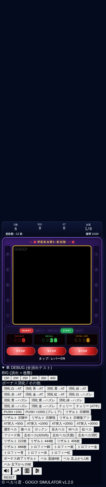
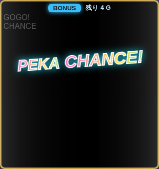
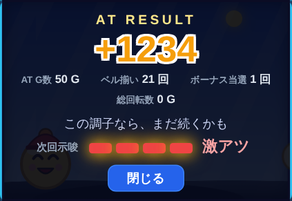
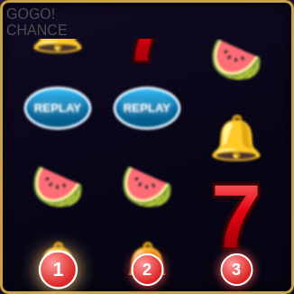
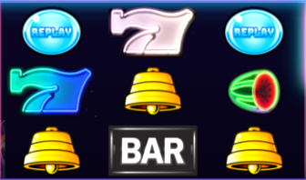
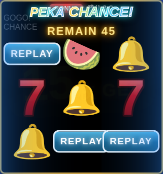
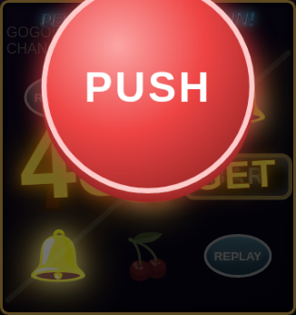

ゲーム性
ペカり君は、GOGOランプの点灯(ペカ)を待つ、ノーマルタイプ寄りのパチスロ。通常時はレバーを叩いてリールを止めるだけ。ランプが光ったら、そこからボーナス、そして AT へとつながっていく。
通常時 小役を引きながらペカを待つ
▼
ペカ ランプ点灯。次のゲームで 7 を揃える
▼
ボーナス ベル 15 枚獲得を続け、最終ゲームでジャッジメント
▼
AT 突入すれば PEKA RUSH。上乗せを重ねて伸ばしていく
▼
終了 結果画面。次回モードの気配に注目

通常時の画面。左右のサイドランプやデータカウンタにも注目
小役とチェリー、スイカ
チェリーとスイカは、取りこぼさず狙うのが基本。チェリーは左リール、スイカは中リールを意識すると拾いやすいはず。チェリーを引いたあとは、しばらくペカりやすい期間に入るという噂もある。
7 は自動で揃う仕様なので、目押しは不要。ペカったらレバーを叩くだけ。
設定表
まずは「本気」モードの数字。設定は 1〜6 の 6 段階。高いほどボーナスが軽く、ATにも入りやすい…とされている。下の数値は、perfect な打ち方をしたときのシミュレーション値。実戦では多少ブレるので、目安として眺めてほしい。
| 設定1 | 設定2 | 設定3 | 設定4 | 設定5 | 設定6 |
|---|
| 機械割 | 約100% | 約103% | 約106% | 約110% | 約115% | 約120% |
| ボーナス(基本)※ | 1/772 | 1/745 | 1/724 | 1/673 | 1/639 | 1/623 |
| AT突入率(150枚) | 20% | 21% | 22% | 23% | 24% | 25% |
| AT突入率(400枚) | 76% | 77% | 79% | 80% | 82% | 84% |
| ATタイプ:HEAVEN※ | 12% | 13% | 14% | 15% | 17% | 20% |
| ATタイプ:DEATH※ | 4% | 4% | 5% | 6% | 7% | 8% |
| 次回:通常 | 56% | 55% | 54% | 52% | 50% | 48% |
| 次回:好調 | 29% | 29% | 29% | 30% | 30% | 30% |
| 次回:絶好調 | 11% | 12% | 12% | 13% | 14% | 15% |
| 次回:天国 | 4% | 4% | 5% | 5% | 6% | 7% |
| 222 OVER | 出ない | 出る可能性あり |
| 444 OVER | 出ない | 出る可能性あり |
| 456 OVER | 出ない | 出る可能性あり |
| 666 OVER | 出ない | 出る可能性あり |
※ 基本確率は、チェリー・スイカ・チャンス目で当たりやすくなる前の数字。実際の体感は 1/260G 前後になる。
※ ボーナスは獲得枚数が 150〜400 枚の間で変動。多いほどATに入りやすい。
※ 「ランダム」を選ぶと、設定は内部でこっそり決まる。この表が頼りになる場面かも。
遊び方のモード
設定画面の上のボタンで、モードを切り替えられる。どのモードも、遊んでいて負けにくいように作ってある…はず。
| 設定1 | 設定2 | 設定3 | 設定4 | 設定5 | 設定6 |
|---|
| 本気 | 約100% | 約103% | 約106% | 約110% | 約115% | 約120% |
| 極楽 | 約110% | 約114% | 約118% | 約122% | 約126% | 約130% |
| 遊本気 | 約100% | 約103% | 約106% | 約110% | 約115% | 約120% |
| 遊極楽 | 約110% | 約114% | 約118% | 約122% | 約126% | 約130% |
- 本気 ふつうの遊び方。出玉の波を楽しみたい人に
- 極楽 ATに入りやすく、HEAVEN や DEATH も多め。出玉感をたっぷり味わいたい人に
- 遊 当たりやすさが約2.5倍。そのかわり、ボーナスの枚数もATのG数も半分。演出をたくさん見たい人に
※ 極楽モードは、ATタイプの HEAVEN / DEATH の割合も上がる。遊モードは「本気」「極楽」と同じ機械割になるよう調整してある。
設定差は、ボーナスの軽さよりも、むしろ AT 突入率と次回モードの引きに表れる印象。1 回では分からなくても、通算で眺めると、じわじわと差が見えてくる…かもしれない。
ボーナス中の楽しみ方
ボーナス中は、ベルを押し順どおりに押して 15 枚ずつ獲得。画面の押し順ナビには素直に従っておくのが無難。


左: ボーナス中のロゴ / 右: 結果画面
画面のふちのオーラに注目
ボーナス中は、画面のふちが色づく。白 → 青 → 黄 → 緑 → 赤 → 金 → 虹の順に、期待が高まっていくらしい。
- 白のまま終われば、残念…と思いきや、意外と AT に入ることもあるとか
- 赤以上が出てくると、ちょっと期待してもいいかもしれない
- 虹は、拝んでおきたい色
最終ゲームのジャッジメント
最終ゲームは JUDGEMENT。ここから心臓の鼓動が聞こえてきたら、そのあとの展開は…各自の目で確かめてほしい。
ATの楽しみ方
AT 中は、ベル・チェリー・スイカでゲーム数の上乗せが狙える。PUSH ボタンが出たら、迷わず押したくなるはず。


赤のナビ / 紫のナビ
- 赤いナビ チェリー絡み。成立するかは、まだ分からない
- 紫のナビ スイカ絡み。ここは期待していいかも
- ベルは押し順を守るだけ。コツコツ積むのが吉
PEKA! PEKA! MOUNTAIN!
AT 中に当たると、ゾーンに突入。5〜10 ゲームのあいだ、毎ゲーム PUSH のチャンス。ロゴの色(青 / 緑 / 金 / 虹)が、勝負どころを知らせてくれるらしい。

ゾーン中。毎ゲームの上乗せに期待

PUSH ボタン。押した瞬間に結果が分かる
小役と ATタイプ
強弱のある小役
チェリー、スイカ、チャンス目には、それぞれ弱と強がある。強いほど、そのあとのボーナスにつながりやすい…とされている。
- 弱チェリー 左リールの上段か下段にチェリー
- 強チェリー 左リール中段にチェリー。出たら、ちょっと期待してもいいかもしれない
- 弱スイカ 左上から右下の斜めに揃うスイカ。第1リール上段に止まったときだけ
- 強スイカ 上段に横に揃うスイカ。第1リール上段に止まったときだけで、中リールを狙う必要がある
- 弱チャンス目 中段にベル・ベル・スイカ。揃わないハズレ目のひとつ
- 強チャンス目 第1リール上段・第2リール中段・第3リール中段にスイカ。揃わない形で、ボーナスへの期待が大きい
AT中は、強チェリーと強スイカで上乗せが決まりやすい…らしい。弱でも、うまくいくことはある。
ATのタイプは3種類
ボーナスからATに入るとき、出玉のタイプがいくつかに分かれる。どれになるかは、入ってみてのお楽しみ。
- PEKA RUSH!!! ふつうのAT。平均で 350 枚前後を目安に
- PEKA RUSH! HEAVEN! 天国的な出玉。ゾーンに入りやすく、平均は 2 倍以上になるかも
- PEKA RUSH! DEATH! 悪魔的な出玉。ごく稀だが、とんでもない枚数になることがある
設定が高いほど、HEAVEN や DEATH に入りやすい傾向があるとされる。ただし、1回では分からない。
設定示唆 攻略メモ
ここからは、攻略雑誌風の「言い切らない」情報。確証はない。でも、気になってしまうのが人情というもの。
OVER「222」が出たら…
ボーナスから結果画面までの獲得枚数が、ある数字に届いた瞬間に出る OVER 表示。もし 222 が出たなら、設定 1 ではない可能性が高まる…のかもしれない。ただし出る頻度は少なめ。そもそも見られたらラッキー、くらいの気持ちで。
OVER「444」「456」なら…
444 は設定 4 以上に期待。456 が出たら、設定 5 以上がグッと近づく気がする。ここまで来ると、そろそろ腰を据えて打ちたくなるところ。
OVER「666」が出現したら…
もし見られたら、それは設定 6 の可能性が…。ただし、ごく稀。出会えたら、その日はいい日になるかもしれない。
※ 250 / 500 / 750 / 1000 などの数字は、ただの通過点。設定とは関係ないはず。
結果画面トロフィーの色
結果画面に出る「ペカり君トロフィー」。銅・銀・金・青・赤・虹と色が変わり、おおむね設定 1〜6 に対応しているとされる。
- 銅は、設定 1 の可能性が高いが…低設定を決めつけるのはまだ早い
- 金以上は、設定 3 以上に期待してもいいかもしれない
- 赤なら設定 5 以上、虹なら設定 6 の香り
- 見せかけの低い色が出ることもあるので、1 回だけで判断しないのがコツ
回転数が増えるほど、トロフィーは本当の設定に寄ってくるという噂も。
サイドランプ左右のペカランプ
ボーナスや AT の終了後、すぐにペカると、筐体の左右のランプが光ることがある。これは「連チャン」のサインかもしれない。逆に、光らないからといって落ち込むことはない。
次回示唆AT終了後の「弱・中・強・激アツ」
AT が終わると、結果画面で次回モードを匂わせてくれる。激アツなら、次回に期待してもいいはず。ただし、全面的に信じすぎると痛い目を見ることも。3 割くらいは、ちょっとだけ意地悪なのかもしれない。
演出の楽しみ方
前兆キャビネットのランプが点いたら
スイカやチェリーが成立する前に、キャビネットのランプが点灯することがある。リールが止まるまで光り続けたなら、何かあるかもしれない。…が、ハズレでも光ることがある。ここは気持ちを高めるスパイスくらいに。
取りこぼし小役を外してしまったら
チェリーやスイカをうっかり外すと、画面に取りこぼし演出が出る。実は、ちょっぴり悔しい気持ちになるための演出。次は拾えるように、リールをよく見て。
ペカり方ランプの光り方にバリエーション
ペカりには、通常・遅れ・ガクンなどのパターンがある。派手な光り方ほど、いいことがあるかも…と思いたいところ。中には、ごく稀に画面が止まる「フリーズ」も。もし出たなら、その日の運を使い切るかもしれない。
コインベルに合わせて降るコイン
ボーナスや AT 中にベルが揃うと、コインが降る。押し順を守れていれば、しっかり降ってくれる。ちょっとした自己満足がここにある。
ペカり君ロゴゾーン中のロゴの色
ロゴが青から虹に近づくほど、期待が高まるとされる。ただし、虹は滅多に出ない。出てくれたら、大きく喜んでいいと思う。
逆転ガッカリのあとに…
カットインが灰色になったり、ステップが途中で止まったり。残念…と思わせておいて、リールが止まったあとに画面が暗転して、いきなり PEKA!! と光ることがある。ガッカリ予告のあとに起こりやすい、という話もあるが、確かなことは分からない。ボーナス終了と思いきや AT に入る「どんでん返し」や、PUSH で小さな数字が出たあとに急上昇する演出もある。
予告カットイン・ステップアップ・会話・暗転
ペカり君のカットインは青、赤、金の順に期待が高まる…ように見える。ステップアップは、最後まで進めば金のカットインが出る。会話や暗転は、気分を盛り上げるだけの場合もある。
連続演出リールが止まったと思ったら
止まったはずのリールがもう一度回り出すことがある。2連、3連と続くと、期待が高まるかも。
ボーナス・AT中コンボとミッション
AT中、ベルが続くとコンボが積み上がり、5、10、20…と節目で画面が盛り上がる。小さなミッションが出ることもあり、達成するとコインが降る。
マウンテン山を登るゲージ
PEKA! PEKA! MOUNTAIN! の間は、画面の下で小さな光が山を登っていく。山頂に着いたときは、きっと気持ちがいい。
通常時の予告パレード、ボタン、ルーレット…
通常時の予告は、カットインやステップアップのほかに、キャラのパレード、PUSHボタン、ルーレット、タイマー、画面割れ、雨と虹、コインの落下、メーター、おみくじ、ランプの点灯などがある。金や赤、「大吉」が出たら、期待していいのかも。
AT中レア役と上乗せ
AT中のレア役は、上乗せのチャンス。強い役ほど、上乗せのゲーム数も多くなりやすい…ような気がする。
演出液晶リールの上の小さな画面
昼から夕方、夜へと空の色が移り変わり、流れ星やUFO、ロケット、気球、虹などが通り過ぎることがある。色が青から緑、赤、金へ変わるほど、何かが起こる気配…かもしれない。
ドンドンドン揺れの回数
画面が揺れて「DON」と出ることがある。1回、2回、3回と増えるほど期待が高まり、3回揺れたら「発展」。ボーナス中なら、オーラが上がるサインに…なるかもしれない。
ナビ1だけナビ
ボーナス中の押し順ナビは、3つ全部が出る日もあれば、最初の1つだけの日もある。最初の1つさえ合っていれば、残りは自由に押してよさそう。
ハズレ矛盾気づく人だけが気づく
ハズレなのに、強い予告と弱い予告がちぐはぐに出ることがある。もしかすると、それは何かが決まっているサインかも。ランプが光るのは、そこから数ゲーム先になる…こともあるようだ。見逃さないように。
ベル・リプレイ通常時の小さな楽しみ
通常時でもベルやリプレイが続くと、液晶がにぎやかになる。3連続、6連続で、ちょっと特別な表示が出ることがある。
ZONE END上乗せの合計
PEKA! PEKA! MOUNTAIN! が終わると、ゾーンで上乗せしたゲーム数の合計が画面いっぱいに出る。数字が大きいほど、色も派手になる。
記録トロフィー・ミッション・ランキング
演出や称号を見た回数に応じて、銅、銀、金のトロフィーがもらえる。経験値がたまるとレベルが上がり、毎日のミッションや連続プレイ日数も楽しめる。ランキングはこの端末内の記録。画面の「記録」ボタンから見られる。
称号集める楽しみ
いろいろな出来事で称号が獲得できる。画面の「称号」ボタンから一覧が見られる。コンプリートを目指すのもいい。
小ネタキリ番、ささやき、衣装
ゲーム数がゾロ目になったり、100G刻みになったりすると、ちょっとした表示が出る。ごくまれに、小さな声が聞こえたり、画面がモノクロになったり。ペカり君の衣装は、曜日で変わるらしい。設定が高いと、隅っこから顔を出しやすい…かもしれない。
前兆ステージと連続演出
ボーナスに当選しても、すぐには光らないことがある。そのあいだ、液晶は橙色の前兆ステージになり、毎ゲーム「STORY 1/5」のように演出が進む。ただし、当選しないガセ前兆もある。本物かガセかは、最後のゲームまで分からない。
ステージ昼・夕・夜
通常時の背景は、昼・夕・夜と変わる。ボーナスやATのあとの当たりやすさをにおわせる…ことがあるが、たまにハズレもある。ガセで夕や夜になることも。
救済ハマり中のサポート
通常時にボーナスが250G以上当たらないと、当選確率が少しずつ上がっていく（最大4倍）。液晶のペカり君も、ハマりに合わせて励ましてくれる。
ウェイト回転の間隔
レバーを続けて叩いても、1ゲームは約4.1秒ぶん待たされる。設定の「演出」から、短縮やなしにも変えられる。振動、通常時のBGM、軽量モードもここで選べる。
編集部より
演出の濃さや示唆は、あくまで「そうかもしれない」の積み重ね。1 回の結果で一喜一憂せず、長く遊ぶなかで、ふと気づく楽しさを味わってほしい。
立ち回りのヒント
- まずは設定 4 前後(初期設定)で、ひととおりの流れを体験してみる
- 慣れたら「ランダム」にして、示唆を頼りに設定を推理してみると面白いかも
- チェリー後は、ペカりやすい時間帯に入るかもしれない。ここは丁寧に
- OVER やトロフィーは、1 回ではなく複数回の傾向で見るのがおすすめ
- ナビが出たら素直に従う。押し順のミスは意外と痛い
※ 本ガイドは非公式の遊び心ある読み物です。数値や挙動は、バージョンアップで変わる場合があります。